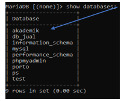
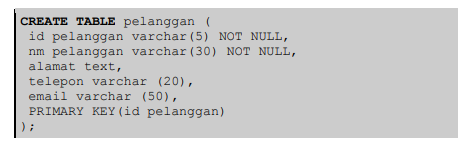
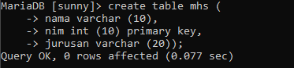
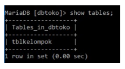
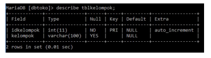

DDL (Data Definition Language) merupakan perintah SQL yang berhubungan dengan pendefinisian suatu database, dalam hal ini database dan table.
Beberapa perintah dasar yang termasuk DDL antara lain :
Sintaks umum SQL untuk membuat suatu database adalah sebagai berikut :
CREATE DATABASE nama_database;
Aturan penamaan sebuah database sama seperti aturan penamaan sebuah variabel, dimana secara umum nama database boleh terdiri dari huruf, angka dan under-score (_).
Jika database yang akan dibuat sudah ada, maka akan muncul pesan error.
Contoh perintah untuk membuat database baru dengan nama db_toko :
create database db_toko;
Sebelum melakukan manipulasi tabel dan record yang berada di dalamnya,
kita harus membuka atau mengaktifkan databasenya terlebih dahulu.
Untuk membuka database dapat menggunakan perintah sebagai berikut :
USE nama_database;
Untuk melihat database yang sudah ada atau yang baru saja dibuat, dapat menggunakan perintah sebagai berikut :
show databases;

Bentuk umum perintah SQL untuk membuat suatu tabel secara sederhana sebagai berikut :
Create table nama_tabel ( field1 tipe(size), field2 tipe(size), PRIMARY KEY (field_key) );


Untuk menampilkan daftar tabel yang sudah dibuat, dapat menggunakan perintah berikut :
show tables;
Perintah di atas akan menampilkan seluruh tabel yang sudah ada dalam suatu database.

Untuk dapat melihat tipe data dan panjang record set pada tabel adalah dengan menampilkan struktur tabel.
Perintah yang digunakan untuk menampilkan struktur tabel adalah :
DESC nama_tabel; atau DESCRIBE nama_tabel;

Untuk menghapus database yang sudah dibuat, dapat menggunakan perintah sebagai berikut :
Drop database nama_tabel;
Jika databasenya ada maka database dan juga seluruh tabel di dalamnya akan dihapus. Jadi berhati-hatilah dengan perintah ini!
Jika nama database yang akan dihapus tidak ditemukan, maka akan ditampilkan pesan error.
Untuk menghapus sebuah tabel pada database, dapat menggunakan perintah sebagai berikut :
Drop table nama_tabel;
Contoh jika kita ingin menghapus tabel dengan nama “buku” maka perintah sql nya adalah
Drop table buku;
Menambah field dapat diartikan sebagai langkah untuk menyisipkan field baru pada sebuah tabel. Untuk melakukan penambahan field maka alter option yang digunakan adalah ADD. Perintah yang digunakan untuk menambah field pada tabel adalah
Alter table nama_tabel add nama_field tipe data (size);
Contoh perintah untuk menambah field pada tabel :
Alter table film add jenis_film varchar (25);
Pada pembuatan database pasti terdapat kesalahan seperti pada field tabel yang berlebihan dan lain-lain. Untuk melakukan penghapusan field maka alter option yang digunakan adalah DROP. Perintah yang digunakan untuk menghapus field pada tabel adalah
Alter table nama_tabel drop nama_field;
Contoh perintah untuk menghapus field pada tabel :
Alter table film drop jenis_film ;
Jika terdapat kesalahan penulisan field dapat dirubah dengan menggunakan menggunakan alter option CHANGE. Perintah yang digunakan untuk mengganti nama field pada tabel adalah
Alter table nama_tabel change field_lama field_baru tipe data;
Contoh perintah untuk mengganti field pada tabel :
Alter table film change judul judul_film varchar (25);
Jika terdapat kesalahan tipe data pada field dapat dirubah dengan menggunakan alter option MODIFY. Perintah yang digunakan untuk mengganti tipe data field pada tabel adalah
Alter table nama_tabel modify nama_field tipe data;
Contoh perintah untuk mengganti field pada tabel :
Alter table film modify judul_film varchar (25);
Untuk mengubah nama tabel dapat menggunakan alter option RENAME. Perintah yang digunakan untuk mengubah nama tabel adalah
Alter table tabel_lama rename to tabel_baru; atau rename table tabel_lama to tabel_baru;
Contoh perintah untuk mengganti field pada tabel :
Alter table filem rename to film;
Rename table filem to film;
Jika ingin menambah primary key pada suatu tabel dapat menggunakan alter dengan option ADD PRIMARY KEY. Perintah yang digunakan untuk menambahkan primary key adalah
Alter table nama_tabel add primary key (nama_field);
Contoh perintah untuk menambahkan primary key pada tabel :
Alter table film add primary key (id_film);
Jika ingin menghapus primary key pada suatu tabel dapat menggunakan alter dengan option DROP PRIMARY KEY. Perintah yang digunakan untuk menghapus primary key adalah
ALTER TABLE nama_tabel DROP PRIMARY KEY;
Contoh perintah untuk menambahkan primary key pada tabel :
Alter table film drop primary key;